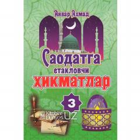

СЕHayotiy va ibratli hikmatlar jamlangan ma'naviy-ma'rifiy to'plam.
Mazkur kitob turli manbalardan va arab adabiyotidan to'plangan hayotiy hikmatlar, o'gitlar hamda ibratli so'zlarning o'zbek tilidagi tarjimasini o'z ichiga oladi. Risola o'quvchilarning ma'naviy dunyoqarashini boyitish, qalbni musaffo qilish va hayotiy tajriba orttirishga xizmat qiladi. Asar tuzuvchi va tarjimon Anvar Аhmad tomonidan tayyorlangan.